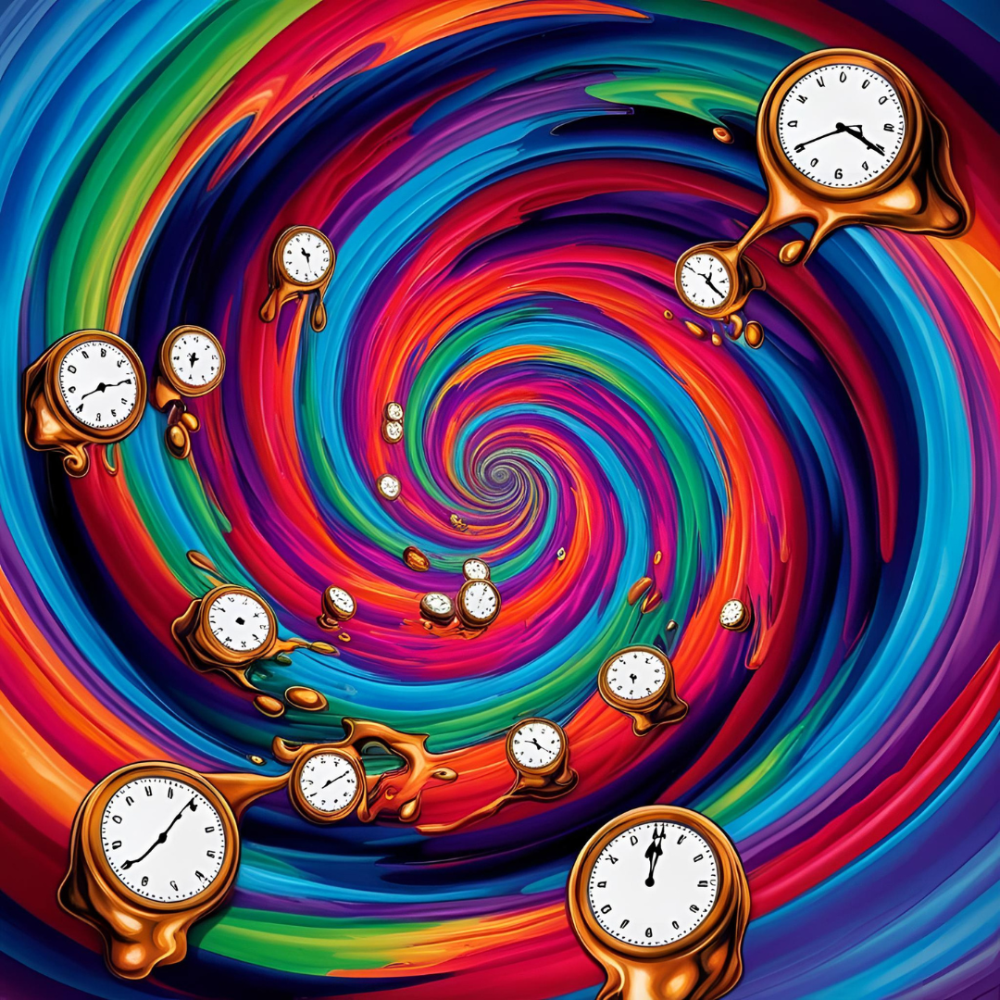
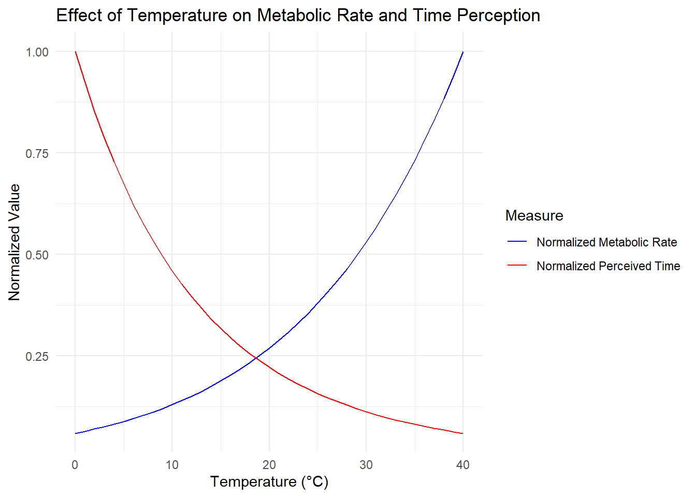
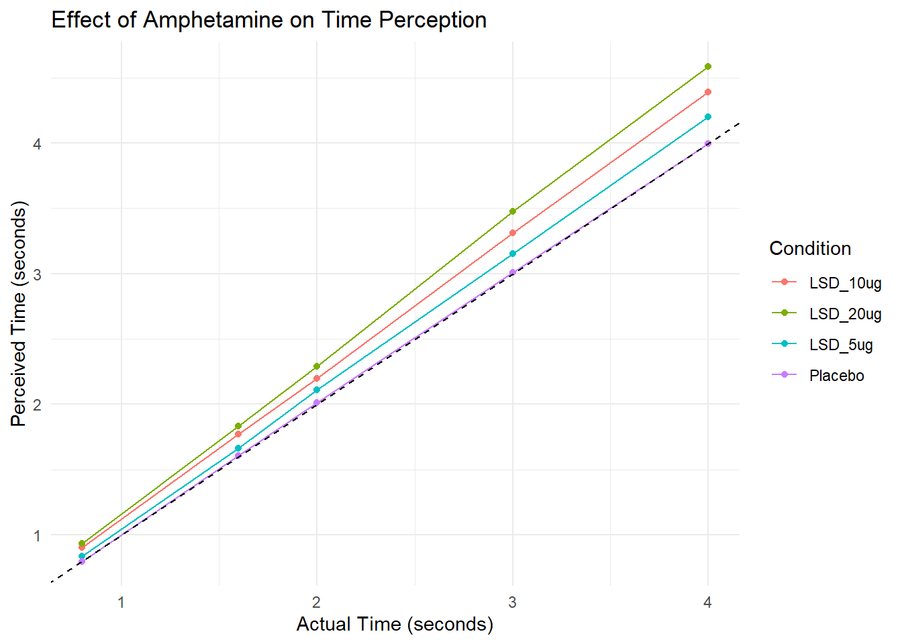
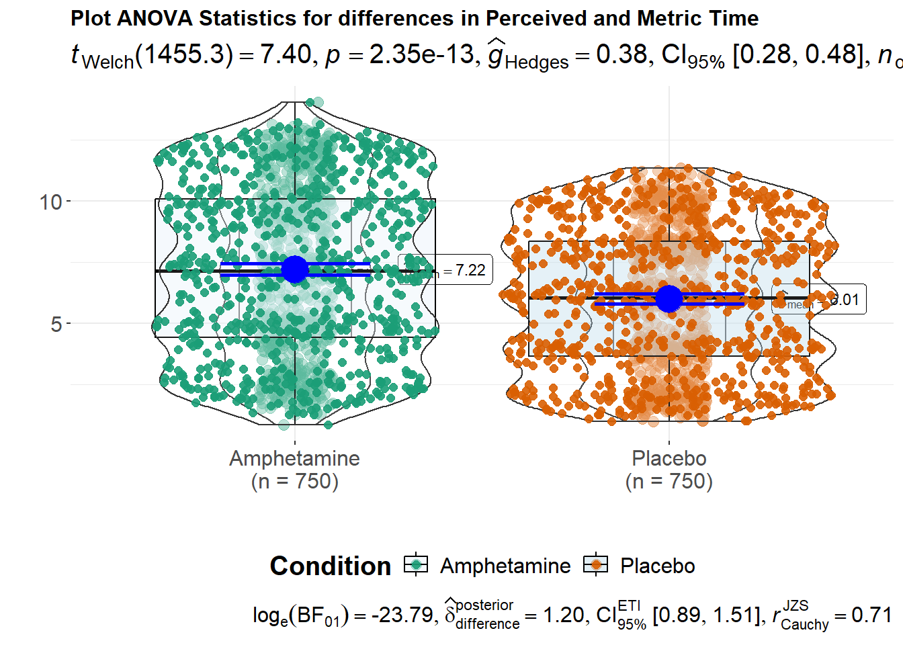
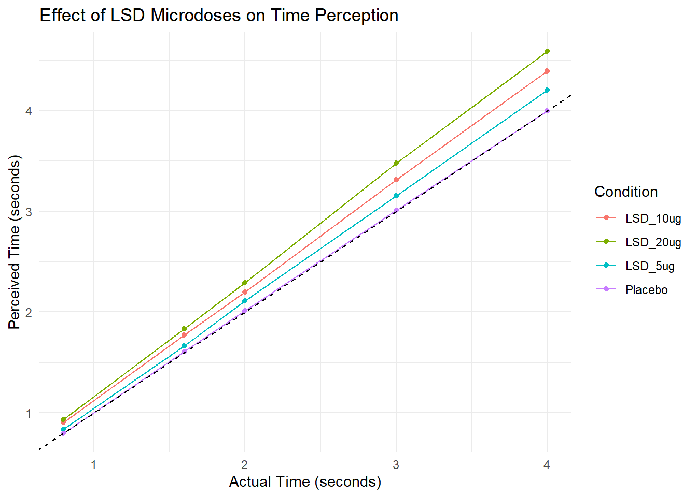

Simulated Effects of Temperature, Amphetamine, and LSD on Time Perception: An In Silico Investigation
Author
Edward F. Hillenaar
Published
February 26, 2025

Source: Image created by Edward F. Hillenaar with https://www.canva.com/ai-image-generator/
Abstract
This study utilizes computational simulations to investigate the effects of temperature, amphetamine, and LSD on time perception. The Arrhenius equation models the influence of temperature on metabolic rate and perceived time. Simulated experiments explore amphetamine’s effects on subjective time estimation and LSD’s impact across varying microdoses. Results suggest complex interactions between physiological factors, pharmacological agents, and the subjective experience of time. The findings offer a theoretical framework for understanding altered time perception and emphasize the need for empirical validation.
Time perception is a complex cognitive process influenced by a variety of factors, including physiological state, pharmacological agents, and environmental conditions (Wittmann et al. 2007). This study employs computational modeling to explore several potential influences on time perception, specifically focusing on the effects of temperature (as mediated through metabolic rate), amphetamine, and LSD. Simulations offer a valuable tool for generating testable hypotheses and exploring complex interactions in a controlled environment.
Methods
Arrhenius Equation Simulation:
Code
# Define constantsA <-1e12# Pre-exponential factor (arbitrary units)R <-8.314# Universal gas constant (J/(mol·K))Ea <-50000# Activation energy (J/mol)# Function to calculate reaction rate based on Arrhenius equationarrhenius_rate <-function(T) { A *exp(-Ea / (R * T))}# Function to simulate perceived time based on metabolic rateperceived_time <-function(actual_time, metabolic_rate) { actual_time / metabolic_rate}# Generate datatemperatures <-seq(273, 313, by =1) # 0°C to 40°C in Kelvinmetabolic_rates <-arrhenius_rate(temperatures)actual_time <-60# 60 seconds# Calculate perceived time for each temperatureperceived_times <-perceived_time(actual_time, metabolic_rates /max(metabolic_rates))# Create a data framedata <-data.frame(Temperature = temperatures -273, # Convert to Celsius for plottingMetabolic_Rate = metabolic_rates,Perceived_Time = perceived_times)
The Arrhenius equation was used to model the effect of temperature on metabolic rate and, subsequently, on perceived time. A range of temperatures (0-40°C) was simulated. Perceived time was modeled as inversely proportional to the normalized metabolic rate.
In this model:
As temperature increases, metabolic rate increases (following the Arrhenius equation).
Perceived time is modeled as inversely proportional to metabolic rate (faster metabolism = slower perceived time passage).
The resulting plot will show how metabolic rate increases with temperature, while perceived time for a fixed actual time decreases. This illustrates the concept that higher temperatures could lead to faster metabolic processes, potentially making time seem to pass more slowly.
Note that this is a simplified model and real biological systems are much more complex. The actual relationship between temperature, metabolic rate, and time perception in humans is not fully understood and would involve many more factors.
Amphetamine Experiment Simulation:
A simulated experiment was conducted with two conditions: Placebo and Amphetamine. Sixty simulated subjects were divided equally between the two conditions. Participants “estimated” time intervals of 2, 4, 6, 8, and 10 seconds, with five trials per interval. Amphetamine was modeled as increasing perceived duration (drug_effect = 1.2), and a small increase in variability was included (noise_level = 0.6).
This simulation provides a framework for understanding how amphetamines might affect time perception, but it’s important to note that real-world effects can be more complex and vary based on dosage, individual differences, and specific experimental conditions.
LSD Experiment Simulation:
A simulated experiment was conducted with four conditions: Placebo, LSD 5ug, LSD 10ug, and LSD 20ug. Sixty simulated subjects were divided equally among the four conditions. Participants “estimated” time intervals of 0.8, 1.6, 2, 3, and 4 seconds, with five trials per interval. LSD was modeled as increasing perceived duration in a dose-dependent manner (drug_effects = c(1, 1.05, 1.1, 1.15)), with a corresponding increase in variability (noise_levels = c(0.1, 0.12, 0.15, 0.18)).
Code
# Set seed for reproducibilityset.seed(123)# Set seed for reproducibilityset.seed(123)# Function to simulate time perceptionsimulate_time_perception <-function(actual_time, drug_effect, noise) { perceived_time <- actual_time * drug_effect +rnorm(1, mean =0, sd = noise)return(max(perceived_time, 0)) # Ensure non-negative time}# Experiment parametersn_subjects <-60# Total number of subjectsactual_times <-c(0.8, 1.6, 2, 3, 4) # Actual time intervals to estimate in secondstrials_per_time <-5# Number of trials for each time interval# LSD conditionsconditions <-c("Placebo", "LSD_5ug", "LSD_10ug", "LSD_20ug")drug_effects <-c(1, 1.05, 1.1, 1.15) # Increasing effect with dosenoise_levels <-c(0.1, 0.12, 0.15, 0.18) # Increasing variability with dose# Simulate experimentsimulate_condition <-function(n, effect, noise) { results <-data.frame()for (subject in1:n) {for (time in actual_times) {for (trial in1:trials_per_time) { perceived <-simulate_time_perception(time, effect, noise) results <-rbind(results, data.frame(Subject = subject, ActualTime = time, PerceivedTime = perceived)) } } }return(results)}all_data <-data.frame()for (i in1:length(conditions)) { condition_data <-simulate_condition(n_subjects/4, drug_effects[i], noise_levels[i]) condition_data$Condition <- conditions[i] all_data <-rbind(all_data, condition_data)}# Calculate mean perceived time for each actual time and conditionsummary_data <-aggregate(PerceivedTime ~ ActualTime + Condition, data = all_data, FUN = mean)
Analysis
For the Arrhenius equation simulation, a plot was generated to visualize the relationship between temperature, metabolic rate, and perceived time (Figure 1). For the amphetamine and LSD experiments, summary statistics were calculated, and plots were generated to compare perceived time across conditions (Figures 2 and 4). ANOVA analyses were performed to statistically evaluate the differences between groups using the R ggstatsplot package(Figure 3).
Results
Arrhenius Equation Simulation:
The simulation demonstrated an inverse relationship between temperature and perceived time. As temperature increased, the simulated metabolic rate increased, and perceived time decreased, representing a subjective speeding up of time (Figure 1).
Code
ggplot(data, aes(x = Temperature)) +geom_line(aes(y = Metabolic_Rate /max(Metabolic_Rate), color ="Normalized Metabolic Rate")) +geom_line(aes(y = Perceived_Time /max(Perceived_Time), color ="Normalized Perceived Time")) +labs(title ="Effect of Temperature on Metabolic Rate and Time Perception",x ="Temperature (°C)",y ="Normalized Value",color ="Measure") +theme_minimal() +scale_color_manual(values =c("Normalized Metabolic Rate"="blue", "Normalized Perceived Time"="red"))

Figure 1: Plot of the Arrhenius Equation showing the relationship between temperature, metabolic rate, and perceived time.
Amphetamine Experiment Simulation:
The amphetamine condition resulted in a systematic overestimation of time intervals compared to the placebo condition (Figure 2). Statistical analysis revealed a significant effect of amphetamine on perceived time (Figure 3).
Code
# Plot resultsggplot(summary_data, aes(x = ActualTime, y = PerceivedTime, color = Condition)) +geom_point() +geom_line() +geom_abline(intercept =0, slope =1, linetype ="dashed") +labs(title ="Effect of Amphetamine on Time Perception",x ="Actual Time (seconds)",y ="Perceived Time (seconds)") +theme_minimal()

Figure 2: Results Plot of a simulated experiment of the effect of usage Amphetamine on time perception.
Code
print(p)

Figure 3: ANOVA statistics for Perceived and Metric Time.
LSD Experiment Simulation:
The LSD simulation demonstrated a dose-dependent effect on perceived time. As the LSD dose increased, the perceived time increased, indicating a subjective slowing down of time (Figure 4).
Code
ggplot(summary_data, aes(x = ActualTime, y = PerceivedTime, color = Condition)) +geom_point() +geom_line() +geom_abline(intercept =0, slope =1, linetype ="dashed") +labs(title ="Effect of LSD Microdoses on Time Perception",x ="Actual Time (seconds)",y ="Perceived Time (seconds)") +theme_minimal()

Figure 4: Simulated Experiment LSD and Time Perception.
Discussion
The simulations presented here provide a theoretical framework for understanding the complex interplay of factors influencing time perception. The Arrhenius equation simulation highlights the potential role of physiological factors, such as metabolic rate, in shaping our subjective experience of time (Figure 1). The amphetamine simulation demonstrates how pharmacological agents affecting dopamine systems can alter temporal estimation (Figure 2). The LSD simulation supports findings that even microdoses can influence time perception, potentially via serotonin system modulation (Yanakieva et al. 2019) (Figure 4). The ANOVA statistics can be observed in figure 3.
Limitations of this study include its reliance on simulated data and simplified models. Future research should focus on empirically validating these findings in human participants and exploring the underlying neural mechanisms involved in these effects. Further work should examine the REBUS model further (Carhart-Harris and Friston 2019).
Conclusion
This in silico study suggests that time perception is a dynamic process influenced by temperature, metabolic rate, and pharmacological agents. While these simulations provide valuable insights, empirical research is crucial for validating these findings and further elucidating the neural mechanisms underlying subjective time experience.
References
Block, Richard A., and Dan Zakay. 1997. “Prospective and retrospective duration judgments: A meta-analytic review.”Psychonomic Bulletin and Review 4 (2): 184–97. https://doi.org/10.3758/BF03209393.
Carhart-Harris, R. L., and K. J. Friston. 2019. “REBUS and the anarchic brain: Toward a unified model of the brain action of psychedelics.”Pharmacological Reviews 71 (3): 316–44. https://doi.org/10.1124/pr.118.017160.
Krystal, John H., Edward B. Perry, Ralitza Gueorguieva, Aysenil Belger, Steven H. Madonick, Anissa Abi-Dargham, Thomas B. Cooper, Lisa MacDougall, Walid Abi-Saab, and D. Cyril D’Souza. 2005. “Comparative and Interactive Human Psychopharmacologic Effects of Ketamine and Amphetamine.”Archives of General Psychiatry 62 (9): 985. https://doi.org/10.1001/archpsyc.62.9.985.
Ogden, Ruth S., John H. Wearden, Denis T. Gallagher, and Catharine Montgomery. 2011. “The effect of alcohol administration on human timing: A comparison of prospective timing, retrospective timing and passage of time judgements.”Acta Psychologica 138 (1): 254–62. https://doi.org/10.1016/j.actpsy.2011.07.002.
Stetson, Chess, Matthew P. Fiesta, and David M. Eagleman. 2007. “Does time really slow down during a frightening event?”PLoS ONE 2 (12): 10–13. https://doi.org/10.1371/journal.pone.0001295.
Tamm, Maria, Ainika Jakobson, Merle Havik, Andres Burk, Saima Timpmann, Jüri Allik, Vahur Ööpik, and Kairi Kreegipuu. 2014. “The compression of perceived time in a hot environment depends on physiological and psychological factors.”Quarterly Journal of Experimental Psychology 67 (1): 197–208. https://doi.org/10.1080/17470218.2013.804849.
Winterbauer, Neil E., and Bernard W. Balleine. 2007. “The influence of amphetamine on sensory and conditioned reinforcement: Evidence for the re-selection hypothesis of dopamine function.”Frontiers in Integrative Neuroscience 1 (NOV): 1–8. https://doi.org/10.3389/neuro.07.009.2007.
Wittmann, Marc, David S. Leland, Jan Churan, and Martin P. Paulus. 2007. “Impaired time perception and motor timing in stimulant-dependent subjects.”Drug and Alcohol Dependence 90 (2-3): 183–92. https://doi.org/10.1016/j.drugalcdep.2007.03.005.
Yanakieva, Steliana, Naya Polychroni, Neiloufar Family, Luke T. J. Williams, David P. Luke, and Devin B. Terhune. 2019. “The effects of microdose LSD on time perception: a randomised, double-blind, placebo-controlled trial.”Psychopharmacology 236 (4): 1159–70. https://doi.org/10.1007/s00213-018-5119-x.
Zhang, Mingming, Di Zhao, Zhao Zhang, Xinyu Cao, Lu Yin, Yi Liu, Ti Fei Yuan, and Wenbo Luo. 2019. “Time perception deficits and its dose-dependent effect in methamphetamine dependents with short-term abstinence.”Science Advances 5 (10). https://doi.org/10.1126/sciadv.aax6916.
———. 2020. “Commentary: Time perception deficits and its dose-dependent effect in methamphetamine dependents with short-term abstinence.”Frontiers in Cellular Neuroscience 14 (263): 1–4. https://doi.org/10.1126/sciadv.aax6916.